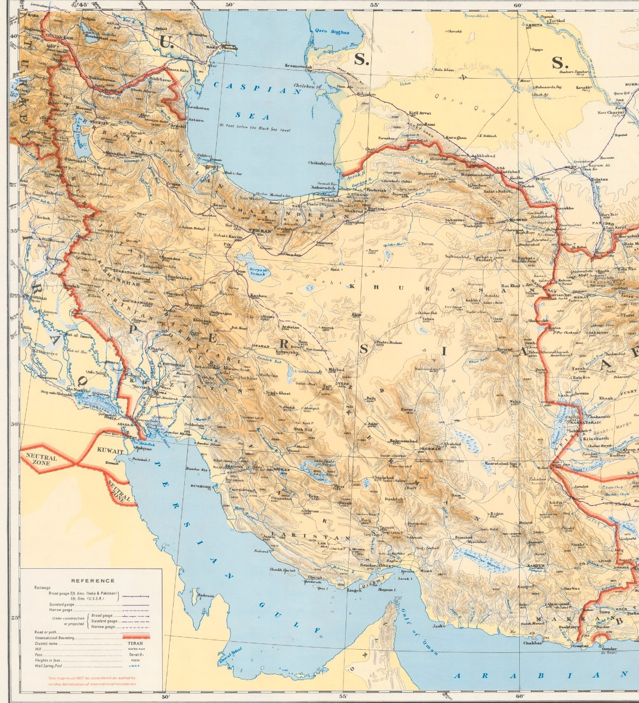
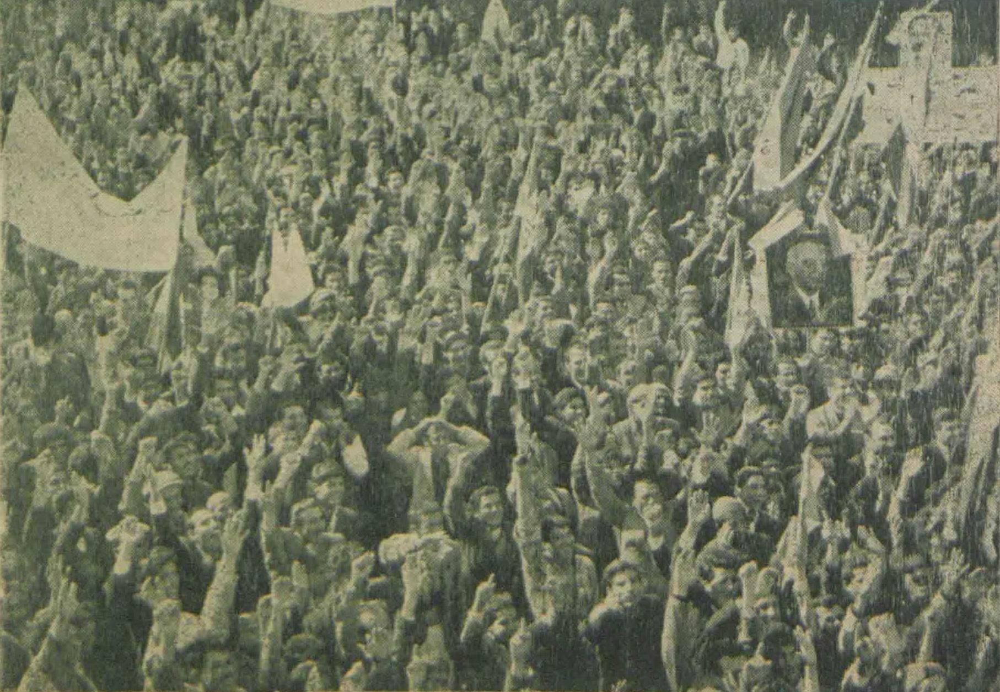
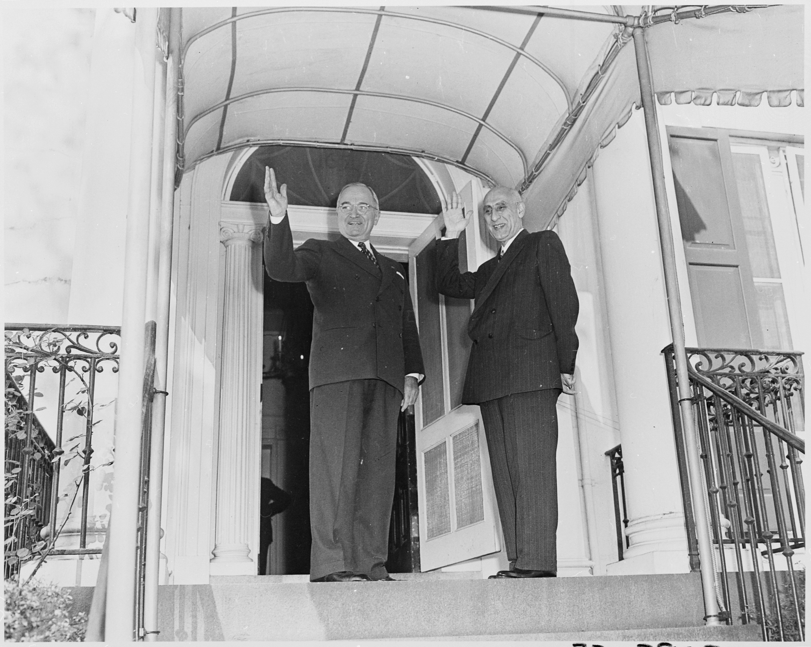
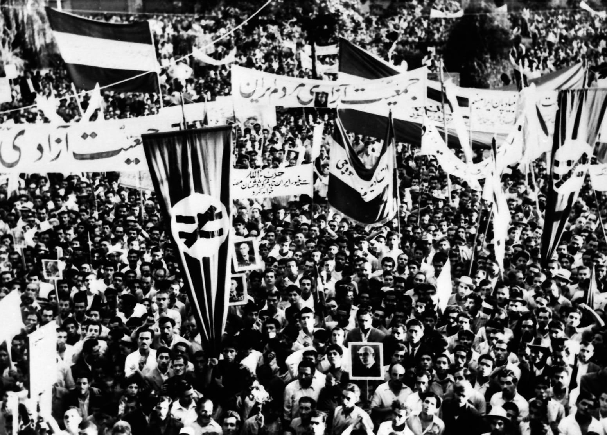
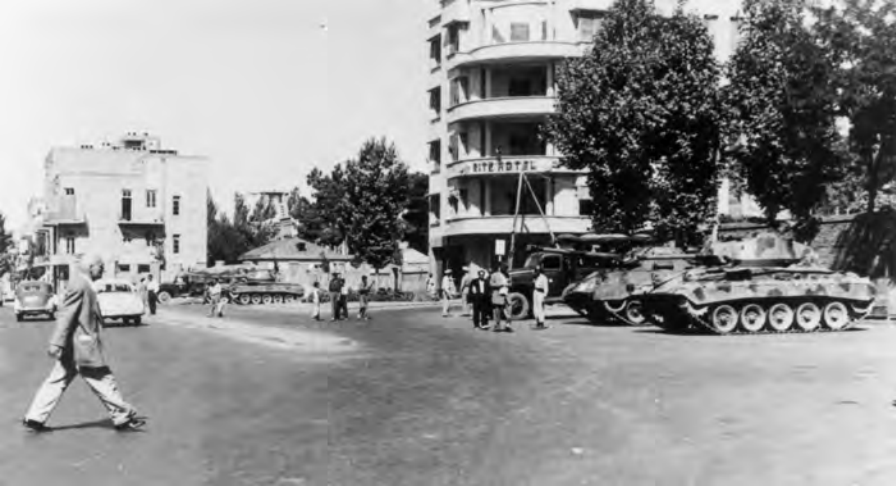

Orientation
The last opening
On 19 August 1953, tanks and armed units seized Radio Tehran and other central institutions, and Mohammad Mossadegh's government fell. The coup ended Iran's last sustained twentieth-century attempt to place elected parliament and responsible government at the center of national power. The Shah built an increasingly centralized dictatorship, and the monarchy's fall in 1979 brought an Islamic Republic dominated by Khomeini's movement rather than a restoration of parliamentary sovereignty. How did an effort with such broad public authority—capable of nationalizing the oil industry and forcing the crown into retreat—end in a broken coalition, a dissolved parliament, and a coup? (Azimi, Iran: The Crisis of Democracy, chapters 1–3 and 15–20; Abrahamian, Iran Between Two Revolutions, chapters 7–11; Painter and Brew, The Struggle for Iran, chapters 6–7 and History and Contested Memories
).
Dates and names
Dates are Gregorian. Iranian-calendar dates such as 30 Tir and 9 Esfand are paired with Gregorian equivalents when first introduced.
Names follow the spellings Mossadegh, Majles, Tudeh, and National Front; published titles retain their original spellings.
Orientation
The story in brief
After the Allied invasion ended Reza Shah's dictatorship in 1941, Iran experienced a turbulent reopening of parliamentary politics. The young Mohammad Reza Shah, the Majles, political parties, the army, bazaar networks, organized labor, and politically active clerics competed to determine who would govern. Britain still controlled Iran's principal industry through the Anglo-Iranian Oil Company (AIOC). Opposition to both royal power and foreign domination coalesced around Mossadegh and the National Front.
Parliament nationalized the oil industry in 1951 and made Mossadegh prime minister. Britain answered with an embargo and an international campaign to isolate Iran. Mossadegh survived the confrontation and an enormous popular uprising in July 1952, but his heterogeneous coalition subsequently fractured while the constitutional struggle with the Shah intensified. Britain and the United States then organized a coup. Its first attempt failed on 15–16 August 1953; a renewed and partly improvised effort combining covert organization with Iranian military, political, clerical, press, bazaar, and street networks overthrew Mossadegh on 19 August.
The returned Shah gradually constructed a much more centralized authoritarian state. Oil exports returned under a Western consortium. The memory of 1953 poisoned Iran's relationship with the United States and helped shape, without by itself causing, the opposition that overthrew the monarchy in 1979.
Orientation
Iran around 1950
Iran was territorially large, mostly rural, and difficult to govern evenly. Tehran, the capital, lay in the north beneath the Alborz Mountains. Abadan and the main oil installations were far to the southwest in Khuzestan, beside the waterway leading to the Persian Gulf. Iranian Azerbaijan in the northwest and the Kurdish regions along the western frontier had recently been the scene of Soviet-backed autonomous movements. Distance, poor communications, and strong local institutions meant that a decision made in Tehran did not automatically become power in every province.

Persiafor Iran. British War Office map, third edition, 1950; cropped from the public-domain sheet. A modern marker identifies Abadan.
Most rural families were tenant sharecroppers, landless laborers, or members of tribal communities rather than independent proprietors. Landlords, tribal chiefs, village headmen, and officials often mediated between them and the state. That made an election formally based on individual male votes compatible with blocs of dependent voters delivered through local authority. It also helps explain why the palace, army, governors, and great landowners could matter more outside major cities than a national party label (Abrahamian, Iran Between Two Revolutions, chapters 1 and 7).
Urban political life had its own institutions. The bazaar was at once a market, workshop district, credit system, guild network, and religious center. Merchants financed mosques, seminaries, charities, and political activity; clerics preached and maintained followers through many of the same spaces. These relationships did not make the bazaar or the clergy one political bloc, but they allowed strikes, donations, messages, and crowds to be organized without a modern mass party (Abrahamian, Iran Between Two Revolutions, chapter 2, The Traditional Middle Class
).
Orientation
The principal actors
- Mohammad Mossadegh: an aristocratic constitutionalist, veteran parliamentarian, nationalist, and, from 1951, prime minister. His central commitments were parliamentary government and effective Iranian control of oil. Decades of opposition to autocratic government and foreign concessions gave him unusual public authority by the time he led the 1949 palace protest that produced the National Front (Abrahamian, Iran Between Two Revolutions, chapter 5, especially pp. 250–53).
- Mohammad Reza Shah: the young monarch who succeeded his father in 1941. Initially weak, he sought to preserve his personal relationship with the armed forces and recover the crown's political authority.
- The National Front: a coalition rather than a disciplined party. It included veteran constitutional politicians, the secular Iran Party, journalists such as , bazaar-connected politicians, and, initially, Ayatollah Abol-Qasem Kashani and his supporters. Its breadth enabled mass mobilization but made coherent government difficult (Abrahamian, Iran Between Two Revolutions, chapter 5; Painter and Brew, The Struggle for Iran, chapter 1,
Mosaddeq and the National Front
). - The Tudeh Party: Iran's large communist party, with important labor, student, intellectual, and clandestine military networks. It initially denounced Mossadegh as insufficiently anti-imperialist and later supported him tactically without entering his coalition.
- Ayatollah Abol-Qasem Kashani: a politically active cleric and important mobilizer against British influence. He supported nationalization and Mossadegh before becoming one of the prime minister's major opponents. He did not speak for the clergy as a whole: senior clerics and local religious networks differed over both daily political intervention and Mossadegh (Abrahamian, Iran Between Two Revolutions, chapters 5–6; Painter and Brew, The Struggle for Iran, chapters 1 and 5).
- The court and armed forces: not one unified faction, but the Shah's most important institutional base. Mossadegh never made the officer corps reliably answerable to his cabinet.
- Ahmad Qavam: a veteran, independent statesman who had previously resolved the 1946 Iranian Azerbaijan crisis. The Shah turned to him when Mossadegh resigned in July 1952; his brief premiership ended in the 30 Tir uprising of 21 July 1952.
- General Fazlollah Zahedi: a former minister and senator with military, court, and foreign connections. By 1953 he had become the alternative prime minister around whom the coup coalition was organized.
- Britain and the AIOC: Britain regarded the company as a strategic, financial, and imperial asset. It was prepared to adjust Iran's revenue but resisted nationalization when that meant losing operational control.
- The United States: initially attempted mediation while also supporting economic and covert pressure. Under the Eisenhower administration, it joined Britain in deciding that Mossadegh should be removed.
Orientation
Political map: how power worked
The constitutional framework
Iran's constitutional order rested on the Fundamental Law of 1906 and its 1907 Supplement. They created a constitutional monarchy and a 136-seat elected Majles with two-year terms and authority over legislation, budgets, borrowing, concessions, treaties, ministerial confidence, and deputies' credentials. The same texts called the Shah chief executive and commander of the armed forces while making ministers responsible to parliament. The resulting ambiguity—an inviolable monarch with executive powers beside a responsible cabinet—was the central constitutional problem (Abrahamian, Oil Crisis in Iran, chapter 3, pp. 79–86; Azimi, Iran: The Crisis of Democracy, chapters 1–3).
How a government was formed
Voters did not directly elect a prime minister. Parliamentary factions first assembled behind a candidate through a vote of inclination (ezhar-e tamayol). The Shah then issued a firman, or royal decree, authorizing that person to form a government; the ministry returned to the Majles for a vote of confidence (ray-e e'temad). The chamber could later withdraw confidence, and a new Majles expected an incumbent ministry to seek a fresh inclination. The crisis repeatedly tested whether the Shah had to follow these conventions or could use the royal decree as an independent power (Abrahamian, Oil Crisis in Iran, pp. 79–86 and 96–103).
The Shah, the army, and the 1949 revision
The Shah treated command of the armed forces as a personal prerogative; constitutionalists argued that the army had to obey the responsible cabinet. The War Ministry controlled commands, promotions, transfers, and military spending, while the Interior Ministry controlled governors, police, and much of the election machinery. Palace influence over those ministries therefore meant leverage over both coercion and the production of parliamentary power (Azimi, Iran: The Crisis of Democracy, chapter 19, especially pp. 288–92; Abrahamian, Oil Crisis in Iran, chapter 3).
A constituent assembly convened after the 1949 attempt on the Shah's life gave him a new power to dissolve either chamber, with elections required within three months. It did not settle whether he could dismiss a prime minister who still claimed parliamentary or popular support—the question at the center of August 1953 (Azimi, Iran: The Crisis of Democracy, chapters 15–20; Abrahamian, Oil Crisis in Iran, pp. 82–86).
The Senate
The constitutional texts had provided for a sixty-member Senate, but it did not actually convene until February 1950. Thirty senators were appointed by the Shah and thirty were chosen indirectly. Its eligibility rules, six-year term, and royal half made it a conservative check on the Majles, though not a disciplined royalist party: appointment route did not determine every vote (Iranian Parliament, official First Senate roster; Abrahamian, Iran Between Two Revolutions, pp. 260–67).
Government formation remained centered on the Majles, but the new Senate also began taking inclination votes without establishing an agreed second veto. In July 1952 Mossadegh won decisively in the Majles but received only fourteen of forty-five Senate votes; days later the Shah appointed Qavam without awaiting a Senate vote. After 30 Tir, the Majles shortened the Senate's term from six years to two, causing the First Senate to expire (Abrahamian, Oil Crisis in Iran, pp. 82–86 and 96–103).
How Majles elections worked
Adult men voted for named candidates in territorial constituencies, some of which returned several deputies; Tehran returned twelve. Women remained excluded despite an organized suffrage campaign and Mossadegh's support for reconsideration. Polling proceeded constituency by constituency over weeks or months rather than on one national election day. Candidates entered as individual deputies, could change caucuses, and had to survive a Majles vote on their credentials before taking their seats (Kashani-Sabet, “The Other Fight”, pp. 270–79; Abrahamian, Oil Crisis in Iran, pp. 86–100).
The Interior Ministry, governors, local boards, landlords, tribal leaders, and military authorities could all shape voting and certification. Mossadegh stopped the unfinished elections for the Seventeenth Majles once enough deputies had been returned to convene, arguing that continued polling would manufacture a palace-backed majority. The chamber functioned with 79 accepted credentials, but attendance later fell much lower. Because two-thirds of the operative membership was needed to debate and three-quarters to vote, absences and walkouts could disable parliament as effectively as defeating a motion (Iranian Parliament, official Seventeenth Majles roster; Abrahamian, Oil Crisis in Iran, pp. 92–100 and 112–17).
Parliamentary balance
The Sixteenth Majles was predominantly conservative, with only eight firm National Front deputies; oil nevertheless enabled that small group to assemble a much wider nationalization coalition. The Seventeenth began with roughly thirty deputies inside or close to the Front and a larger but divided field of opponents and conditional notables. As allies defected in 1953, attendance and quorum mattered more than any fixed party count (Official Sixteenth and Seventeenth Majles proceedings, sessions 128 and 141; Abrahamian, Iran Between Two Revolutions, pp. 250–67 and 269–70; Foreign Relations of the United States, docs. 67, 192, 233, and 239).
Parties, factions, and political networks
Iran did not have a stable national party system. Formal parties and slates mattered, especially in Tehran, but deputies also followed local notables, families, patrons, landlords, tribal leaders, officials, and temporary parliamentary caucuses.
Political power also operated outside parliament:
- The bazaar meant more than a marketplace. Merchants, craft guilds, lenders, mosques, and neighborhood connections could finance politics, close commerce, circulate messages, and bring crowds into the streets.
- The ulama, or Shi'i religious scholars, did not form a single hierarchy. Individual clerics possessed different religious followings, bazaar connections, and political ambitions.
- The press was highly partisan. A newspaper could be an organization, patronage network, and mobilizing instrument as much as a business.
- The armed forces were the Shah's most dependable institutional base, but officers also formed competing personal and conspiratorial networks.
- The street was not one actor. Students, party militants, guild members, religious followers, workers, neighborhood strongmen, police, and soldiers could appear together without sharing the same purpose.
Orientation
Economic map: why oil dominated the crisis
An unequal oil enclave
Most Iranians worked outside petroleum, but oil supplied crucial state revenue and foreign exchange. The British-controlled AIOC ran production, the Abadan refinery, shipping, sales, and much of the accounting by which Iran's payments were calculated. Around Abadan it also provided housing, utilities, clinics, schools, and subsidized goods through a sharply unequal company hierarchy. Nationalization therefore concerned sovereignty, labor, development, and control of an industrial welfare system—not only the royalty rate (Ladjevardi, Labor Unions and Autocracy in Iran, chapters 3–4; Painter and Brew, The Struggle for Iran, chapter 1; International Labour Office, Labour Conditions in the Oil Industry in Iran, pp. 31–38).

What nationalization had to accomplish
Nationalization transferred legal ownership to Iran, but ownership alone could not sell oil. Exports required tankers, insurance, buyers, finance, marketing, and protection against lawsuits and British retaliation. Iranian personnel could operate much of the physical industry; replacing the AIOC's international commercial system was harder. A fifty-fifty
division of profits also left management, auditing, output, marketing, and compensation unsettled, so apparently generous offers could still fail the sovereignty test (Abrahamian, Oil Crisis in Iran, chapters 1–2; Elm, Oil, Power, and Principle, nationalization and negotiation chapters).
Adjustment without oil exports
When the embargo reduced oil exports almost to zero, imports and development spending fell, credit expanded, and oil-dependent workers and towns suffered. Currency depreciation, non-oil exports, import compression, taxes, reserves, and domestic credit nevertheless kept the state operating through August 1953. Iran was neither economically unharmed nor demonstrably hours from bankruptcy, and national totals reveal little about how unevenly households experienced the shock (Clawson and Sassanpour, “Adjustment to a Foreign Exchange Shock”, pp. 2–18).
Oil-less economics
was a program
After 30 Tir, Mossadegh's government directed credit toward agriculture, import substitution, and non-oil exports. Exchange certificates made imports dearer, encouraged exports, and rationed scarce foreign currency. The US Point Four rural technical-assistance program supported irrigation, seeds, health, and anti-malaria work even as Washington moved toward regime change. These measures did not make settlement unnecessary or prove that survival without oil was indefinitely sustainable, but they constituted an economic program rather than passive endurance (Brew, Petroleum and Progress in Iran, pp. 120–28; International Monetary Fund, International Financial Statistics, pp. 187–88).
Chapter 01
Before Mossadegh: concession, dictatorship, and political opening
1901–1941: oil and the Pahlavi state
A British concession granted in 1901 led to the discovery of oil in 1908 and the creation of the Anglo-Persian Oil Company, later the AIOC. The British government acquired a controlling interest, and Iranian oil became strategically important to the Royal Navy.
Reza Shah's government renegotiated the concession in 1933 under profoundly unequal political conditions. The agreement improved some financial terms but extended the concession until 1993. Iranian nationalists subsequently treated it as an illegitimate surrender of national resources.
Meanwhile, Reza Shah dismantled meaningful parliamentary government. Elections were controlled, ministers answered to the ruler, and the army became the foundation of royal power (Painter and Brew, The Struggle for Iran, chapter 1, pp. 10–15; Abrahamian, Iran Between Two Revolutions, chapter 3, pp. 135–65).
1941: the dictatorship abruptly opens
Britain and the Soviet Union invaded Iran in August 1941, principally to secure the wartime supply route and forestall German influence. Reza Shah was forced to abdicate in favor of his twenty-one-year-old son.
The occupation was humiliating, but Reza Shah's removal reopened political life. The press and parties proliferated, the Majles recovered some independence, labor organization expanded, and the Tudeh Party became a mass political force. The young Shah began a long struggle to recover the powers exercised by his father (Abrahamian, Iran Between Two Revolutions, pp. 164–76).
Iran now had an unresolved constitutional problem. The written 1906–07 order made ministers responsible to the Majles and described the monarch as politically inviolable and therefore not responsible for government. The precedents established under Reza Shah instead gave the monarch personal control over elections, ministers, and the armed forces. That contradiction underlies nearly everything that follows (Abrahamian, Oil Crisis in Iran, chapter 3, The Constitution
; Azimi, Iran: The Crisis of Democracy, chapters 1–3).
1946–1949: pressure mounts
A major oil-workers' strike at Abadan in 1946 exposed poor working and living conditions as well as the political power of organized labor (Ladjevardi, Labor Unions and Autocracy in Iran, chapters 3–4). Soviet forces delayed their promised withdrawal while supporting an autonomous government in Iranian Azerbaijan and the Kurdish Republic of Mahabad. The central state restored control after the Soviet withdrawal and the collapse of both movements. The episode made anti-communism, separatism, and territorial integrity central political concerns (Abrahamian, Iran Between Two Revolutions, chapter 5; Koohi-Kamali, The Political Development of the Kurds in Iran, chapter 4, pp. 89–125; Atabaki, Azerbaijan: Ethnicity and the Struggle for Power in Iran, pp. 123–216).
On 4 February 1949, an assassin fired at the Shah. The government used the attempt to impose martial law, suppress the Tudeh Party, arrest opponents, and convene a constituent assembly. The Shah acquired a power to dissolve the Majles and appointed half of the newly convened Senate. The monarchy was rebuilding its position just as the oil question became politically explosive (Abrahamian, Oil Crisis in Iran, chapter 3, The Constitution
; Azimi, Iran: The Crisis of Democracy, chapter 15).
Chapter 02
The National Front and nationalization, 1949–1951
October–November 1949: the National Front emerges
Government manipulation of the Sixteenth Majles election produced a protest led by Mossadegh. Opposition politicians sought sanctuary at the royal palace and demanded honest elections, freedom of the press, and an end to martial law. This was a form of bast: protestors placed themselves under the protection of a sacred or politically difficult-to-violate site. Their cooperation became the National Front.
Oil was not the coalition's only, or initially even its principal, demand. It soon joined two questions that became inseparable: Iranian sovereignty over the country's most important natural resource and constitutional government free of royal and foreign interference. Sources place the palace protest on differing dates in October 1949 (Azimi, Iran: The Crisis of Democracy, pp. 207–08; Abrahamian, Iran Between Two Revolutions, chapter 5).
The protest did not itself deliver a parliamentary majority. Disputed voting in Tehran was cancelled and rerun; Mossadegh and seven allies then entered the predominantly conservative Sixteenth Majles. In May 1950, the government created an eighteen-member oil committee that included five National Front deputies and made Mossadegh its chair. The committee gave this small, organized delegation a platform from which procedural work, public pressure, and the unifying oil question could attract deputies who did not belong to the Front. The committee allowed the small National Front delegation to turn procedural work, public pressure, and the oil question into a much broader parliamentary coalition for nationalization (Abrahamian, Iran Between Two Revolutions, chapter 5, especially pp. 250–67; Painter and Brew, The Struggle for Iran, chapter 1).
1949–1950: the supplemental agreement fails
The AIOC and Iran negotiated the Gass–Golshayan Supplemental Agreement. It offered more revenue but left the company's structure and control substantially intact. International conditions made the offer increasingly indefensible: in 1950 Saudi Arabia obtained a nominal fifty-fifty profit arrangement from Aramco, encouraging Iranians to ask why their older industry should accept less.
Prime Minister Haj Ali Razmara argued that immediate nationalization was administratively and economically dangerous. The AIOC's refusal to offer substantially better terms weakened him. The Majles oil committee rejected the supplemental agreement on 25 November 1950, and the Majles rejected it on 11 January 1951 (Painter and Brew, The Struggle for Iran, chapter 1, The Oil Dispute, 1949–1950
; Abrahamian, Oil Crisis in Iran, chapter 1, Oil Nationalization
).
March 1951: assassination and nationalization
On 7 March 1951, Khalil Tahmasabi, a member of the militant Islamist Fada'iyan-e Islam, assassinated Razmara. Who else encouraged or knew about the assassination remains unknown. The oil committee approved nationalization the following day. The Majles approved the principle in mid-March, and the Senate approved it on 20 March (Painter and Brew, The Struggle for Iran, chapter 1, pp. 36–38).
The legislation did not merely demand better royalties. It nationalized the industry throughout Iran. A subsequent nine-article law set out how nationalization would be implemented (Official Sixteenth Majles laws and decisions, printed pp. 15–16).
April–May 1951: Mossadegh becomes prime minister
The Majles gave Mossadegh a vote of inclination in late April. The Shah then issued the firman authorizing him to form a government, and the new ministry returned for parliamentary confidence. Mossadegh had accepted on the condition that the implementation law be enacted. The National Iranian Oil Company became the legal vehicle for taking control.
This was the high point of a remarkably broad national consensus. Iranian engineers could operate much of the industry, but the confrontation exposed acute weaknesses in tanker access, international marketing, some specialized refining processes, and protection against a coordinated boycott (Azimi, Iran: The Crisis of Democracy, chapters 16–17; Painter and Brew, The Struggle for Iran, chapter 1).
Chapter 03
The first Mossadegh government and the oil confrontation
Britain's counterattack
Britain refused to accept nationalization as Iran defined it. British technicians withdrew from Abadan; the last group left in October 1951. Britain:
- excluded Iranian oil from its established markets;
- threatened legal action against purchasers and tanker operators;
- restricted Iran's access to sterling assets;
- sought international condemnation;
- prepared military options, although it did not invade; and
- sought an Iranian government prepared to settle on different terms.
The resulting embargo reduced Iran from a major oil exporter to a negligible one (Painter and Brew, The Struggle for Iran, chapters 2–3; Elm, Oil, Power, and Principle, Nationalization
and Negotiations
chapters).
Why negotiations failed
The proposals changed, but the underlying dispute repeatedly returned. In July 1951, President Truman sent Averell Harriman to reopen talks and restrain British pressure. Harriman induced Britain to negotiate on the principle of nationalization.
Richard Stokes then proposed that Iran formally receive the AIOC's assets while an AIOC operating company still ran production and refining and an AIOC-linked organization bought the oil. Iran countered that the National Iranian Oil Company should employ foreign technicians itself and sell oil through ordinary contracts. Mossadegh accepted a purchasing organization but not British control of its staff; Stokes would not accept British personnel working for NIOC, and his mission ended in August (Painter and Brew, The Struggle for Iran, chapter 2, Harriman Comes to Iran
and The Stokes Proposal
).
During Mossadegh's October–November visit to Washington, Assistant Secretary of State George McGhee tried a new division between ownership and operation. NIOC would own the fields, but a mostly foreign board and a nominally neutral company—expected to be Royal Dutch Shell—would manage them; AIOC would market most output and another foreign company would run Abadan. Price now became decisive. Mossadegh sought roughly the producing-company price—the price at which the producer sold the oil before its costs and profits were divided—while McGhee offered the lower tax-and-royalty-style return received by host governments elsewhere. Britain rejected even that plan because it displaced AIOC, restricted compensation, and threatened British interests in other oil concessions (Painter and Brew, The Struggle for Iran, chapter 3, The Charm Offensive
and The Price of a Deal
).

The World Bank's January–March 1952 intervention was meant to postpone those final questions. For as long as two years, the Bank would manage the industry, finance its restart, sell oil to AIOC, and hold part of the proceeds in escrow without deciding the ultimate legal claims. That bridge foundered over the return of British technicians, whether the Bank would act for Iran's account
—meaning that it would manage on behalf of Iranian ownership rather than as an independent concession holder—Iran's control of personnel and direct sales, and the discounted price. Talks adjourned on 17 March; the Bank publicly announced the recess on 3 April (International Bank for Reconstruction and Development, 1952 negotiation review, Press Release No. 285 and attached review, PDF pp. 3–9; Painter and Brew, The Struggle for Iran, chapter 3, The World Bank Intervention
and The End of the World Bank's Efforts
).
The dispute was therefore not simply over a royalty percentage. Iran would discuss compensation but would not accept arrangements that restored foreign control in substance or valued the cancelled concession as decades of lost future profits. Britain sought continued access to experienced foreign management, protection for AIOC, and terms that would not encourage nationalization elsewhere. Through 1952, Washington increasingly tied aid to a settlement and feared that prolonged deadlock would strengthen the Tudeh, but the Truman administration still refused Britain's request for support for a coup. There was real room for negotiation, but no politically easy bargain. Interim arrangements could restart the industry only by postponing conflicts over control, personnel, sales, and compensation—the very questions on which both sides believed their larger political position depended (Abrahamian, Oil Crisis in Iran, pp. 56–58; Katouzian, Musaddiq and the Struggle for Power, revised preface and chapters 8–9; Elm, Oil, Power, and Principle, negotiation chapters; Painter and Brew, The Struggle for Iran, chapters 3–5).
Chapter 04
The constitutional showdown and the July uprising
The Seventeenth Majles
Elections for the Seventeenth Majles were heavily contested. Mossadegh halted voting before every seat had been filled, arguing that royal and military interference made honest elections impossible. Opponents regarded the decision as manipulation. The resulting parliament contained National Front supporters but also formidable opposition, and procedural conflict became a principal arena of the crisis (Abrahamian, Oil Crisis in Iran, chapter 3, The Seventeenth Majles
; Azimi, Iran: The Crisis of Democracy, chapter 18).
16–21 July 1952: who controls the army?
Mossadegh demanded direct control of the War Ministry. The Shah refused. Because senior command remained tied to the palace, this was not a symbolic cabinet appointment: it decided whether the government controlled the coercive state.
Mossadegh resigned on 16 July. On 17 July, with government supporters boycotting the sitting, 40 of the 43 Majles deputies present backed Ahmad Qavam. The Shah then issued Qavam's firman without awaiting Senate approval. Qavam announced that he would restore order and resolve the crisis. On 21 July—30 Tir in the Iranian calendar—a general uprising engulfed Tehran and other cities. National Front organizations, bazaar networks, Kashani's followers, and the Tudeh mobilized, but not under one command. Security forces fired on demonstrators. An estimated 250 or more demonstrators were killed or seriously injured across Tehran, Hamadan, Ahvaz, Isfahan, and Kermanshah. The figure combines deaths and serious injuries across five cities; no agreed death toll survives (Abrahamian, Iran Between Two Revolutions, p. 271).
The Shah retreated, Qavam resigned, and Mossadegh returned in triumph. Prominent party and clerical leaders mattered, but commercial, neighborhood, and crowd networks were equally crucial to the mobilization (Azimi, Iran: The Crisis of Democracy, chapter 19, pp. 288–92; Nukii, “The Bazaaris’ Political Role”, pp. 159–75).
22 July 1952: the ICJ ruling
The day after 30 Tir, the International Court of Justice ruled that it lacked jurisdiction over Britain's case. This was an important legal victory for Iran, but it neither restored oil exports nor broke the embargo (International Court of Justice, 1952 oil judgment, judgment).
Mossadegh at the height of his power
After 30 Tir, Mossadegh acquired the War Ministry, renamed the Ministry of National Defense, and received six months of emergency legislative powers, later extended for one year.
Parliament temporarily delegated defined lawmaking fields to the cabinet. Mossadegh could put decrees into effect without a prior chamber vote, but they were provisional and ultimately had to return to the Majles for endorsement. Supporters presented this as temporary capacity for reform during an emergency. Opponents and some former allies saw the extension as rule around the legislature. The grant was therefore at once a victory over royal interference, an effort to govern amid parliamentary obstruction, a concentration of authority in the prime minister, and a cause of the coalition's breakup (Abrahamian, Oil Crisis in Iran, chapter 3).
Chapter 05
The coalition fractures, 1952–1953
30 Tir restored Mossadegh at the head of a coalition that had won the same battle for different reasons. His cabinet, weighted toward loyal Iran Party and technocratic figures, and his efforts to curtail court influence exposed tensions that already existed. Former lieutenants soon disputed appointments and access: Mozaffar Baghai and Hossein Makki believed newer figures had received offices that they had earned, while Ayatollah Abol-Qasem Kashani challenged appointments and government intrusions into clerical, bazaar, and patronage networks (Abrahamian, Iran Between Two Revolutions, pp. 271–76; Abrahamian, Oil Crisis in Iran, pp. 103–06; Katouzian, Musaddiq and the Struggle for Power, pp. 164–67).
By autumn, Baghai had ceased meeting Mossadegh, made contact with Zahedi and other opponents, and split the . Despite its socialist name, the party had joined unlike constituencies: Baghai's nationalist-populist organization drew on traditional bazaar and street networks, while led a Marxist intellectual wing. and most activists reorganized as the and remained pro-Mossadegh. Real policy conflicts sharpened the personal contest. Government regulation, land and labor measures, electoral reform and possible women's suffrage, martial law, fear of Tudeh influence, and delegated legislation all threatened some former allies' principles, constituents, or power (Abrahamian, Iran Between Two Revolutions, pp. 275–78; Abrahamian, Oil Crisis in Iran, pp. 103–11; Katouzian, Musaddiq and the Struggle for Power, pp. 167–71).
The embargo narrowed the room in which these disputes could be compromised. Oil revenue vanished without producing an immediate nationwide price collapse, but import compression, unpaid contractors and bonuses, urban unemployment, and development retrenchment accumulated; retaining former oil workers shifted part of the shock onto the budget. The government's answers—new taxes, credit expansion, regulation, and provisional reforms—gave opponents concrete arguments about inflation, property, and executive power. The burden varied substantially by place and class, and each defection also reflected political interests, personal rivalry, or disagreement over the government's direction (Brew, Petroleum and Progress in Iran, pp. 120–44; Clawson and Sassanpour, “Adjustment to a Foreign Exchange Shock”, pp. 2–18).
The Tudeh increasingly defended Mossadegh against royalism and imperialism, but remained institutionally separate and distrusted him. Its visible street power frightened conservatives, clerics, landowners, officers, and American policymakers. It was a major political force, but it neither controlled the government nor had the position within the armed forces required for an immediate seizure of power in August 1953 (Abrahamian, Iran Between Two Revolutions, chapter 6; Gasiorowski and Byrne, eds., Mohammad Mosaddeq and the 1953 Coup, Maziar Behrooz, pp. 102–25).
The coalition broke apart for several reasons at once: widening social and ideological differences, rivalry over appointments and access, disputes over Mossadegh's authority, and tactical frustration. It had united people whose desired futures for Iran were fundamentally incompatible (Azimi, Iran: The Crisis of Democracy, chapter 20; Abrahamian, Iran Between Two Revolutions, pp. 275–78; Katouzian, Musaddiq and the Struggle for Power, chapters 11–12).
October 1952: relations with Britain are broken
After continuing British political activity and failed negotiations, Iran severed diplomatic relations with Britain. British intelligence officers left. The closure badly impaired Britain's ability to direct its assets, but networks including the Rashidian brothers and contacts in political, military, clerical, and bazaar circles survived. Their later operational use depended substantially on liaison through the CIA (Painter and Brew, The Struggle for Iran, chapter 6, Approaching the Shah
).
January 1953: emergency powers and open rupture
The coalition's rupture became public when Kashani, Baghai, Makki, and allied deputies opposed extending Mossadegh's delegated lawmaking powers for another year. The deputies abstained when the issue was tied to confidence, which Mossadegh still won by 59 votes to 1. The result showed both that the former allies had openly broken and that their dissent had not yet become a parliamentary majority (Abrahamian, Oil Crisis in Iran, pp. 103 and 108–09; Katouzian, Musaddiq and the Struggle for Power, pp. 170–71).
28 February 1953: the 9 Esfand crisis
The immediate dispute concerned the boundary between crown and government. Mossadegh demanded an end to palace and army intrigues, transfer of control over the royal estates, and the Shah's subordination to the responsible government. The Shah then offered to leave Iran temporarily. Whether he genuinely intended to go—and whether Mossadegh merely accepted or actively encouraged the plan—is unclear. Opponents presented it as an attempt to drive out the monarch (Rahnema, Behind the 1953 Coup in Iran, pp. 49–59; Painter and Brew, The Struggle for Iran, chapter 5, 9 Esfand
).
Royalist officers, politically active clerics, and crowds mobilized to prevent the Shah's departure. A crowd attacked Mossadegh's residence, and the prime minister escaped through the rear of the compound.
The incident demonstrated how anti-government crowds, officers, court politicians, and clerical networks could cooperate. It also showed the mobilizing power of presenting the Shah's departure as imminent, making 9 Esfand an important precursor to August (Rahnema, Behind the 1953 Coup in Iran, pp. 49–59; Painter and Brew, The Struggle for Iran, chapter 5, 9 Esfand
).
April 1953: Afshartus is murdered
General Mahmoud Afshartus, Mossadegh's police chief and an important loyal security official, was kidnapped and murdered. His removal deprived the government of a trusted commander amid several overlapping conspiracies. No documented link shows that foreign governments directed the murder (Rahnema, Behind the 1953 Coup in Iran, chapter 4; Painter and Brew, The Struggle for Iran, pp. 138–39 and 155).
At the same time, dissident deputies used absence to obstruct a parliamentary report affirming cabinet control of the civil and military administration. After the murder, investigators linked suspects to Baghai and Zahedi; both men took sanctuary in the Majles under Kashani's protection. Investigators did not prove that Baghai ordered the killing. Its political effect was nevertheless clear: former National Front allies, royalists, and parliamentary obstruction were converging before the summer quorum crisis (Abrahamian, Oil Crisis in Iran, pp. 112–15; Katouzian, Musaddiq and the Struggle for Power, pp. 172–73).
Chapter 06
Britain, the United States, and the decision for a coup
Britain sought Mossadegh's removal before the United States formally joined a coup operation. The Truman administration attempted mediation and opposed a British invasion, but it was not neutral: it participated in economic pressure, covert propaganda, and the search for a replacement government.
The Eisenhower administration changed the balance. By spring 1953, American and British officials had concluded that an acceptable oil settlement was unlikely while Mossadegh remained in office. The CIA and MI6 developed a joint coup plan known to the CIA as TPAJAX, building in part on the British precursor known as Operation Boot.
Their motives overlapped without being identical:
- Britain wanted to defend its oil position, imperial credibility, and the principle that concessions could not be unilaterally abolished.
- American officials feared prolonged instability, expansion of the Tudeh Party, and possible Soviet advantage.
- Both worried that successful nationalization could become a model elsewhere.
- Both came to treat Mossadegh's removal as a prerequisite for
stability.
Officials increasingly justified removal through a forecast of eventual collapse. They argued that an oil-less economy could not endure and that the National Front could not manage the transition, even while contemporary assessments placed a breakdown months rather than days away. A real but nonterminal economic shock thus became an argument for replacing the government and returning Iranian oil to the international company system. Economic pessimism, Cold War fears, and resistance to decolonization reinforced one another (Brew, Petroleum and Progress in Iran, pp. 128–44; Clawson and Sassanpour, “Adjustment to a Foreign Exchange Shock”, pp. 2–18).
The decision for a coup joined Cold War strategy to the defense of an imperial economic order against decolonization (Painter and Brew, The Struggle for Iran, chapters 4–5; Abrahamian, Oil Crisis in Iran, chapters 1–2; Azizi, “Communism, Cold War, and the 1953 Coup”, pp. 295–99).
Chapter 07
The referendum and the collapse of parliament
By summer 1953, opposition deputies used parliamentary procedure to obstruct the government. Fifty-two pro-government deputies, eventually fifty-six, announced their resignations. The coordinated move was intended to make a quorum impossible and clear the way for dissolution; opponents maintained that the resignations were not legally effective until the chamber accepted them. Pro-government
here describes the wider tactical resignation bloc, including conditional supporters and notables; it does not mean that all fifty-six were firm National Front deputies.
Mossadegh called a referendum on dissolving the Seventeenth Majles. It was held in Tehran on 3 August and in the provinces on 10 August. Separate locations or visibly separate ballot boxes for yes
and no
compromised secrecy. The official result was overwhelmingly in favor of dissolution. Women also attempted to participate. It is unclear whether officials prevented them from voting or allowed votes that were then excluded from the official count.
The referendum was not the dissolution procedure written into the constitution. A 1949 revision had given the Shah a power to dissolve the Majles if new elections followed, but its scope was never agreed; Mossadegh instead grounded the vote in popular sovereignty. The result therefore did not settle the chamber's legal status. The Interior Ministry began preparing a new election, and on 16 August—after the first coup attempt failed and the Shah fled—the government formally announced the dissolution.
Genuine obstruction, corruption, and royal interference explain why Mossadegh turned to a referendum. The choice was still constitutionally irregular and politically disastrous. It removed the institution on which his parliamentary legitimacy rested and enabled coup planners to argue that the Shah could dismiss him directly (Abrahamian, Oil Crisis in Iran, chapter 4, Government Removal
; Painter and Brew, The Struggle for Iran, chapter 5; Kashani-Sabet, “The Other Fight”, pp. 275, 278).
Mossadegh thus weakened parliament while trying to defend parliamentary government.
Chapter 08
The coup, 15–19 August 1953
The plan
The Shah was induced to sign decrees purporting to dismiss Mossadegh and appoint General Fazlollah Zahedi. CIA and British networks spread propaganda, contacted officers and politicians, cultivated Iranian clerical, press, bazaar, and street intermediaries, and prepared to present the decrees as a legal transfer of government.
Kermit Roosevelt was the CIA's operational lead in Tehran. The Rashidians were a British-connected Iranian family network with political, press, bazaar, and street contacts. They were important intermediaries, not a single command capable of controlling every crowd or officer.
The Shah and the coup planners presented the decrees as a lawful transfer of government. The constitution did not clearly authorize the Shah to dismiss a prime minister in these circumstances, so the firmans supplied a claim to legality rather than settling the question.
15–16 August: the first attempt fails
Colonel Nematollah Nassiri arrived at Mossadegh's residence with the dismissal firman as officers moved to arrest government officials. The government had received warning. Nassiri was arrested, military units failed to move as planned, and the operation collapsed.
The Shah fled first to Baghdad and then Rome. Crowds pulled down royal statues. The government appeared to have won.

17–18 August: the failed plan gives way to improvisation
CIA officer Kermit Roosevelt remained in Tehran and continued the operation despite confused and discouraging instructions from Washington. The Shah's decrees were publicized. CIA and British-linked agents continued contacting Iranian officers, politicians, newspapers, and crowd organizers. Roosevelt, Zahedi, and surviving Iranian and British-linked networks improvised after the original military plan failed. Coordination was now looser: some actions followed those networks, while others gathered momentum through local officers, politicians, and street groups (Rahnema, Behind the 1953 Coup in Iran, pp. 138–220; Painter and Brew, The Struggle for Iran, chapter 6).
At the same time, anti-Shah demonstrations—some involving Tudeh supporters and some manipulated or intensified by provocateurs—alarmed moderates and conservatives. After a tense meeting with US Ambassador Loy Henderson, Mossadegh ordered demonstrations ended and instructed the security forces to clear the streets. The order reduced organized pro-government presence and added confusion, but it did not empty Tehran or predetermine how police and military units would behave on 19 August.
19 August: crowds, soldiers, and tanks
Pro-Shah groups appeared in south Tehran during the morning and moved toward the center. They attacked pro-government newspapers and National Front institutions. Police and military units that might have suppressed them stood aside or joined.

The decisive phase was military. Pro-Shah officers and units deployed tanks and occupied the telegraph office, police headquarters, and radio station. Government control of Radio Tehran ended shortly after 2 p.m. The station then became part of the operation rather than merely its announcer. Shortly before 5 p.m. it falsely reported that was dead and Mossadegh's house had fallen before either claim was true; Zahedi then spoke and read the royal appointment decree. By broadcasting victory while streets and institutions were still contested, the new controllers helped turn a local struggle into an apparently completed transfer of state power and bring provincial stations into line.
Tanks attacked Mossadegh's residence after several hours of fighting. Mossadegh escaped but surrendered the following day. A near-contemporary memorandum estimated more than fifty killed and about 300 wounded, but the exact toll is unknown (Rahnema, Behind the 1953 Coup in Iran, pp. 220–88; Painter and Brew, The Struggle for Iran, chapter 6; Randjbar-Daemi, “Radio Tehran and the 19 August 1953 Coup”, pp. 284–86; British memorandum, “Political Review of the Recent Crisis”, paragraphs 8–9).
How the coup succeeded
The United States and Britain supplied the larger operation's planning, money, propaganda, royal pressure, communications, and military contacts. After the first attempt failed, the immediate Tehran coordination of the renewed and partly improvised effort centered on Roosevelt, Zahedi, CIA officers, the Rashidians, and their Iranian military and political contacts. The successful operation was not the original plan revived intact, but it depended on the organization, money, and relationships built for that plan.
Iranian officers, police, court politicians, clerical and bazaar intermediaries, newspaper operators, and street organizers supplied the coercive and political machinery that captured Tehran. Mossadegh's loss of allies, the army's unreliability, the clearing of pro-government demonstrators from the streets, and decisions made on the day all helped the operation succeed.
No single command controlled every participant on 19 August. Central organizers continued to direct important parts of the operation, while other participants acted through local alliances and for their own reasons. The result was both foreign-engineered regime change and an Iranian struggle for control of the state (Bayandor, Iran and the CIA, chapters 7–9; Painter and Brew, The Struggle for Iran, chapter 6; Rahnema, Behind the 1953 Coup in Iran, chapters 8–16; Gasiorowski and Byrne, eds., Mohammad Mosaddeq and the 1953 Coup, Gasiorowski, pp. 227–80).
Chapter 09
The immediate aftermath
Repression
The Shah returned on 22 August. Mossadegh was tried by a military court, sentenced to three years' imprisonment, and then confined to his estate at Ahmadabad until his death in 1967.
was captured and executed in 1954. Other National Front leaders were imprisoned, excluded from politics, or driven underground. The Tudeh Party was crushed. Thousands of members or suspected sympathizers were arrested or dismissed, and discovery of its clandestine military organization in 1954 led to executions and further repression (Painter and Brew, The Struggle for Iran, chapter 7 and History and Contested Memories
; Abrahamian, Iran Between Two Revolutions, chapter 9).
The 1954 oil settlement
Britain and Iran restored diplomatic relations in December 1953. A new consortium agreement followed in 1954. Its initial equity distribution gave:
- 40 percent to the former AIOC, renamed British Petroleum;
- 40 percent collectively to American companies;
- 14 percent to Royal Dutch Shell; and
- 6 percent to France's Compagnie française des pétroles (CFP, later Total).
Iran formally owned the oil and obtained a fifty-fifty profit arrangement, but consortium operating companies received full and effective
management and controlled international marketing. It was financially better than the old concession but far short of the independent control envisioned in 1951 (Painter and Brew, The Struggle for Iran, chapter 7, The Oil Consortium
; Abrahamian, Oil Crisis in Iran, chapter 2, The Consortium Agreement
).
The Shah consolidates power
The later royal dictatorship developed in stages. Prime Minister Zahedi initially possessed his own power base. The Shah removed him in 1955 and progressively centralized authority.
US economic and military assistance expanded. SAVAK, the monarchy's intelligence and internal-security service, was established in 1957 with American and Israeli technical assistance. Elections became controlled, independent opposition was marginalized, and nominally competing royal parties replaced meaningful parliamentary politics. Increasing oil income eventually financed development, military expansion, and an increasingly personal monarchy (Abrahamian, Iran Between Two Revolutions, chapter 9; Painter and Brew, The Struggle for Iran, chapter 7 and History and Contested Memories
).
Chapter 10
Longer consequences: 1963–1979
In 1963, the Shah introduced the White Revolution, including land reform and women's suffrage. The reforms changed Iranian society but were imposed through an authoritarian state. Clerical opposition led by Ruhollah Khomeini helped produce the June 1963 uprising.
The coup's most consequential legacy was the closing of political possibilities:
- constitutional nationalism was defeated;
- the monarchy became increasingly dependent on American support;
- legal opposition institutions were weakened or eliminated;
- later dissidents inherited no durable parliamentary arena in which to organize; and
- many Iranians came to see the United States as guarantor of the Shah rather than a possible anti-colonial mediator.
In 1979, a broad revolutionary coalition overthrew the monarchy and an Islamic Republic dominated by Khomeini's movement emerged. During the intervening twenty-six years, social change, royal policy, religious organization, and new opposition movements transformed Iranian politics. The coup nevertheless helped create the authoritarian political structure, foreign dependency, and historical grievance within which the revolution developed (Painter and Brew, The Struggle for Iran, History and Contested Memories
; Abrahamian, Iran Between Two Revolutions, chapters 9–11).
Conclusion
Why the crisis ended in a coup
The crisis ends badly because six problems become locked together:
- Oil sovereignty: Iran could not accept foreign ownership in substance after nationalization in law.
- Constitutional sovereignty: Mossadegh could not govern constitutionally while the Shah retained a personal military and manipulated parliament, but some measures used to overcome those obstacles also damaged constitutional restraints.
- Coalition politics: the movement capable of winning nationalization contained secular liberals, politically active clerics, bazaar networks, populists, workers, and socialists who did not agree on the state they wanted afterward.
- Economic warfare: the embargo did not automatically bankrupt Iran, but it steadily narrowed the government's political and material room.
- Foreign intervention: Britain and the United States transformed Mossadegh's domestic vulnerability into regime change.
- Contingency: the first coup plan failed. The renewed effort succeeded through a precarious combination of improvisation, covert organization, Iranian agency, military defection, government mistakes, and luck. Its exact path was not inevitable.
The outcome came from that combination: neither the oil dispute nor the foreign intelligence operation explains the whole crisis by itself.
Sources
Bibliography and source guide
The topic guide identifies the most useful chapters or pages for each part of the primer. The selected bibliography beneath it supplies complete publication information. Citations throughout the page lead to the relevant bibliographic entry rather than to an external website.
Topic guide
Selected bibliography
- Fakhreddin Azimi, Iran: The Crisis of Democracy, 1941–1953 (New York: St. Martin's Press, 1989).
- Ervand Abrahamian, Iran Between Two Revolutions (Princeton: Princeton University Press, 1982).
- Ervand Abrahamian, Oil Crisis in Iran: From Nationalism to Coup d'État (Cambridge: Cambridge University Press, 2021).
- Mark J. Gasiorowski and Malcolm Byrne, eds., Mohammad Mosaddeq and the 1953 Coup in Iran (Syracuse: Syracuse University Press, 2004). Individual chapters are cited by their authors where relevant.
- Ali Rahnema, Behind the 1953 Coup in Iran (Cambridge: Cambridge University Press, 2015).
- Homa Katouzian, Musaddiq and the Struggle for Power in Iran (London: I.B. Tauris, revised paperback edition, 1999; reprinted 2009).
- Darioush Bayandor, Iran and the CIA: The Fall of Mosaddeq Revisited (Basingstoke: Palgrave Macmillan, 2010).
- Habib Ladjevardi, Labor Unions and Autocracy in Iran (Syracuse University Press, 1985).
- Mostafa Elm, Oil, Power, and Principle: Iran's Oil Nationalization and Its Aftermath (Syracuse University Press, 1992).
- David S. Painter and Gregory Brew, The Struggle for Iran: Oil, Autocracy, and the Cold War, 1951–1954 (University of North Carolina Press, 2023).
- Gregory Brew, Petroleum and Progress in Iran: Oil, Development, and the Cold War (Cambridge University Press, 2022).
- Farideh Koohi-Kamali, The Political Development of the Kurds in Iran: Pastoral Nationalism (Palgrave Macmillan, 2003).
- Touraj Atabaki, Azerbaycan: Etnisite ve İran'da İktidar Mücadelesi, trans. Hojjat Ghasemlou (Istanbul: Tarih Vakfı Yurt Yayınları, 2021), Turkish translation of the revised Azerbaijan: Ethnicity and the Struggle for Power in Iran.
- Majles-e Shura-ye Melli, Majmu'e-ye Qavanin-e Dowreh-ye Shanzdahom-e Qanungozari [Collection of Laws of the Sixteenth Legislative Term] (Majles Printing House, Sixteenth legislative period).
- Majles-e Shura-ye Melli, official proceedings of the Sixteenth and Seventeenth Majles, 297 session scans. Citations identify the chamber, session, date, and printed page where available.
- Arash Azizi,
Communism, Cold War, and the 1953 Coup,
International Journal of Middle East Studies 56, no. 2 (2024): 295–299. - Mari Nukii,
The Bazaaris' Political Role during Mosadeq's Government,
Annals of Japan Association for Middle East Studies 18, no. 1 (2003): 159–185. - Firoozeh Kashani-Sabet,
The Other Fight,
International Journal of Middle East Studies 56, no. 2 (2024): 270–279. - International Court of Justice, Anglo-Iranian Oil Co. (United Kingdom v. Iran), Preliminary Objection, Judgment of 22 July 1952, I.C.J. Reports 1952, 93.
- Patrick Clawson and Cyrus Sassanpour,
Adjustment to a Foreign Exchange Shock: Iran, 1951–1953,
International Journal of Middle East Studies 19, no. 1 (February 1987): 1–22. - International Bank for Reconstruction and Development,
Review of the International Bank's Negotiations with Iran,
attached to Press Release No. 285, 3 April 1952. - British government,
Persia: Political Review of the Recent Crisis,
2 September 1953, US National Archives, Record Group 59, box 411, file 788.00/9-253. The author, office, and intended audience are unidentified. - Majles-e Showra-ye Melli, Asami-ye Namayandegan-e Majles-e Showra-ye Melli az Aghaz-e Mashrutiyat ta Dowreh-ye 24-e Qanungozari va Namayandegan-e Majles-e Sena dar Haft Dowreh-ye Taqniniyeh [Names of the National Consultative Assembly Deputies from the Beginning of Constitutional Government through the Twenty-Fourth Legislative Term, and of the Senate Deputies through Seven Legislative Terms] (Tehran: Majles Press, May–June 1977). The cited sections cover the Sixteenth Majles, Seventeenth Majles, and First Senate.
- International Labour Office, Labour Conditions in the Oil Industry in Iran: Report of a Mission of the International Labour Office, January–February 1950, Studies and Reports, New Series, no. 24 (Geneva: International Labour Office, 1950).
- International Monetary Fund, International Financial Statistics, vol. 3, no. 12 (December 1950); vol. 4, no. 12 (December 1951); vol. 6, no. 8 (August 1953); and vol. 7, no. 12 (December 1954).
- Siavush Randjbar-Daemi,
Radio Tehran and the 19 August 1953 Coup: A New Perspective,
International Journal of Middle East Studies 56, no. 2 (2024): 280–287. - James C. Van Hook, ed., Adam M. Howard, general ed., Foreign Relations of the United States, 1952–1954, Iran, 1951–1954, 2nd ed. (Washington: US Government Publishing Office, 2018).